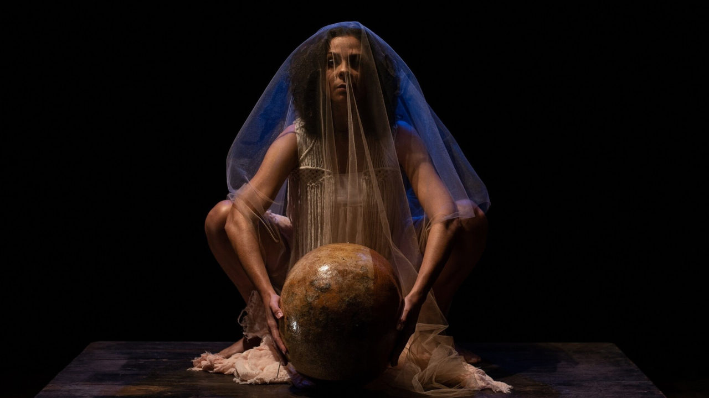

Teatro YouTube reforça programação com creator economy, humor ao vivo e espetáculo premiado em São Paulo

Espaço do Conjunto Nacional aposta em agenda que conecta teatro, internet e entretenimento ao vivo com “TIP”, “Diva ao Vivo” e “Bom Dia Pra Quem?”.
O Teatro YouTube, no Conjunto Nacional, em São Paulo, apresenta uma programação que atravessa os meses de maio e junho e reforça sua proposta de integrar palco, produção de conteúdo e creator economy. A agenda reúne formatos distintos, do espetáculo solo à sitcom ao vivo, passando por humor de auditório e experiências ligadas a criadores já consolidados no ambiente digital.
O primeiro destaque é “TIP – Antes Que Me Queimem Eu Mesma Me Atirei no Fogo”, que estreou no espaço em 1º de maio e segue em cartaz até 31 de maio. Segundo a página oficial de vendas, a peça é apresentada como um relato de autoficção nascido da experiência da atriz durante a pandemia e terá apresentações às sextas e aos sábados, às 20h, e aos domingos, às 17h.
Outro ponto forte da programação é “Diva ao Vivo”, da dupla Diva Depressão, formada por Fih Oliveira e Edu Camargo. O programa semanal retorna em formato presencial no Teatro YouTube a partir de 7 de maio, com sessões às quintas-feiras, às 20h, e atualmente já aparece no Eventim com datas programadas até 20 de agosto. O evento é descrito como uma extensão ao vivo do humor debochado e caótico que tornou a dupla popular nas plataformas digitais.
Já em junho, o teatro recebe “Bom Dia Pra Quem?”, primeira sitcom ao vivo da DiaTV, com estreia marcada para 11 de junho. Diferentemente do horário informado no texto-base, a agenda oficial indica duas sessões por noite, às 18h e às 20h, com temporada até 16 de julho. A produção acompanha uma equipe de agência tentando sustentar a aparência de sucesso em meio a jobs absurdos e relações de trabalho esvaziadas.
Com essa curadoria, o Teatro YouTube reforça sua atuação como espaço híbrido, aproximando linguagens da internet e do teatro em experiências presenciais que dialogam com públicos acostumados ao digital, mas interessados em novas formas de encontro ao vivo. Essa leitura também aparece no material enviado, que posiciona o espaço como polo de criatividade e conexão entre criadores, indústria e audiência.
Serviço
TIP – Antes Que Me Queimem Eu Mesma Me Atirei no Fogo
Temporada: de 1º a 31 de maio de 2026
Sessões: sextas e sábados, às 20h; domingos, às 17h
Classificação: 18 anos, com entrada permitida para 16 e 17 anos acompanhados de responsável, segundo o texto-base
Local: Teatro YouTube.
Diva ao Vivo – Diva Depressão
Temporada anunciada: de 7 de maio a 20 de agosto de 2026
Sessões: quintas-feiras, às 20h
Classificação: 16 anos Local: Teatro YouTube.
Bom Dia Pra Quem? – DiaTV
Temporada anunciada: de 11 de junho a 16 de julho de 2026
Sessões: quintas-feiras, às 18h e às 20h
Classificação: 16 anos Local: Teatro YouTube.
Teatro YouTube
Endereço: Av. Paulista, 2073, Cerqueira César, São Paulo
Ingressos: disponíveis na bilheteria oficial e nos canais autorizados de venda.